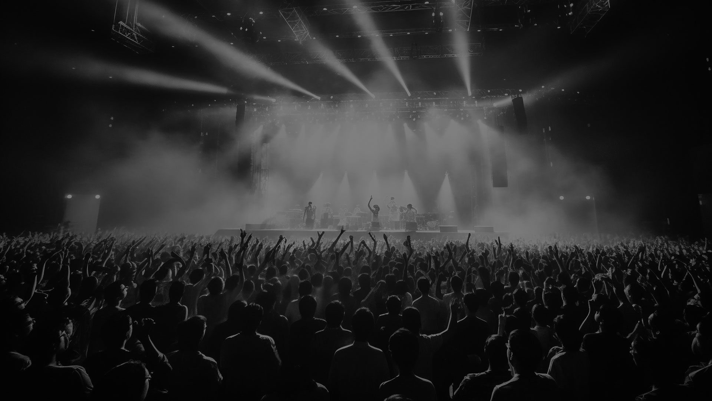

SOBRE NOSOTROS
Según datos del Instituto Nacional de Estadídica y Geografía (INEGI), en 2022, un sorprendente 47.0 % de la población de 18 años o más asistió a un concierto o presentación de música en vivo. ¡Eso representa un aumento masivo de 23.9 puntos porcentuales desde 2021! México se destaca como un epicentro musical en América Latina, y la industria musical está en auge. Sin embargo, a medida que la escena musical crece, también lo hace la necesidad de una herramienta que se centre en la música local y en los artistas emergentes mexicanos. Aquí es donde entra en juego "Jam Radar". En un país tan diverso musicalmente como México, es esencial tener una plataforma que refleje la riqueza cultural de la música en vivo. Ya sea que te apasione el mariachi, el rock, el reggaetón o cualquier otro género, Jam Radar te conectará con los eventos y conciertos que más te interesan, todo en un solo lugar. Porque sabemos que la información sobre eventos musicales en México puede estar dispersa en diversas fuentes en línea. Nuestra aplicación centraliza toda esta información, haciéndola accesible y fácil de navegar para ti.
